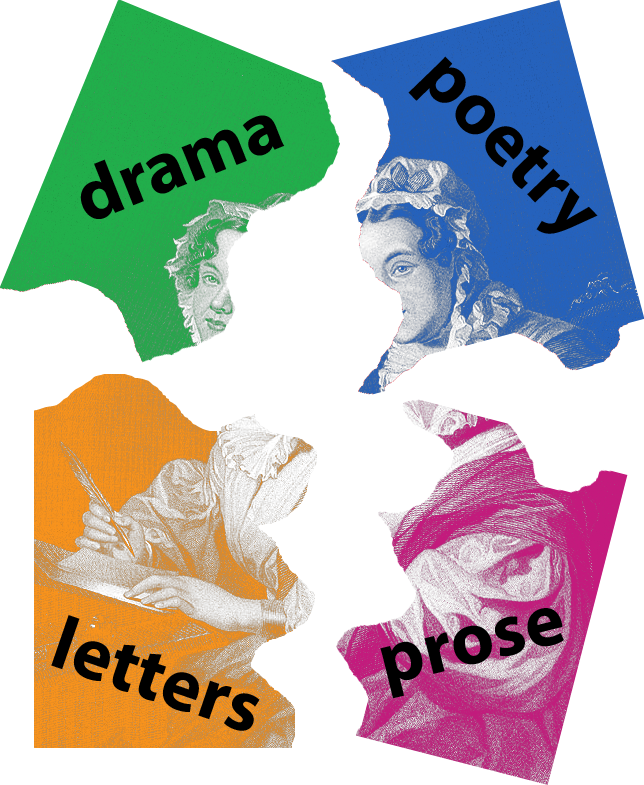

Digital Mitford Project
Position: Green Scholar - Fall 2019 to Present
 Amber works as a Research Assistant (or, Green Scholar) under the direction of Dr. Elisa Beshero-Bondar. To learn more about the project, click the Digital Mitford logo!
On this project, Amber is learning various aspects of the Digital Humanities, including text-encoding, manuscript analysis, and archival skills.
Coding and Digital Archives Project: TBD Fall 2019
This Fall, Amber is taking Dr. Beshero-Bondar's Digital Studies: Coding and Digital Archives Class at Pitt-Greensburg. She'll be participating in a Digital Project as part of this class, and the specific project has yet to be determined. More information will be available as the project begins and develops!
Teen Titans Project
In Spring of 2020, Amber joined the Teen Titans Project, originally started by Lauren McNeill and Shannon Dunn in the Fall of 2019. This project aims to create an online resource for the popular television and comic series Teen Titans. The goal of the project was initially to create a comparison between the comic issues and television series, as well as providing some analysis of dialogue and other various analytics. 2020 brought the new goal of mapping character movement in Season 2 of the television show.